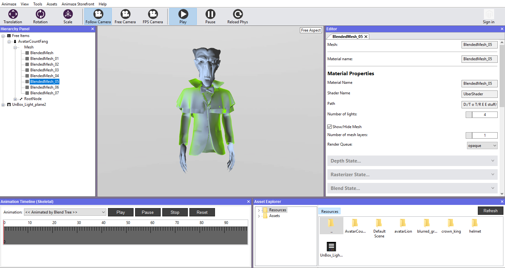
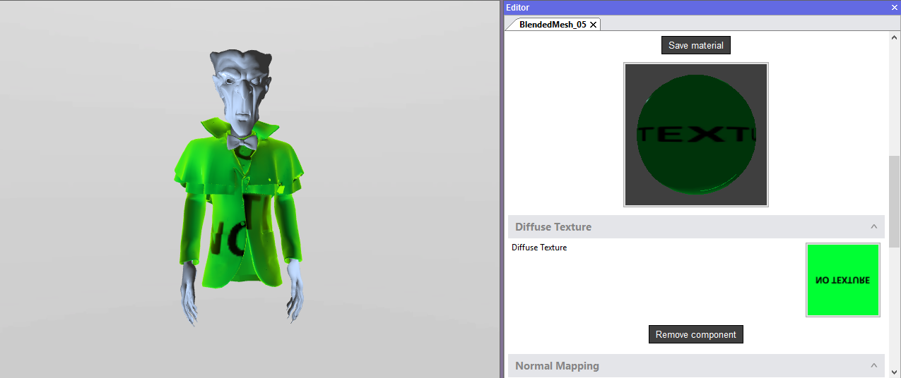
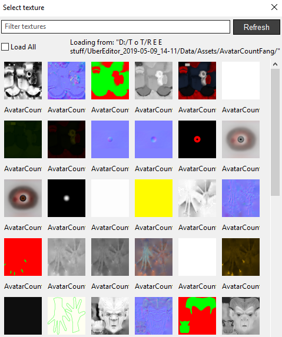
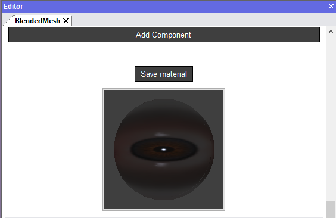
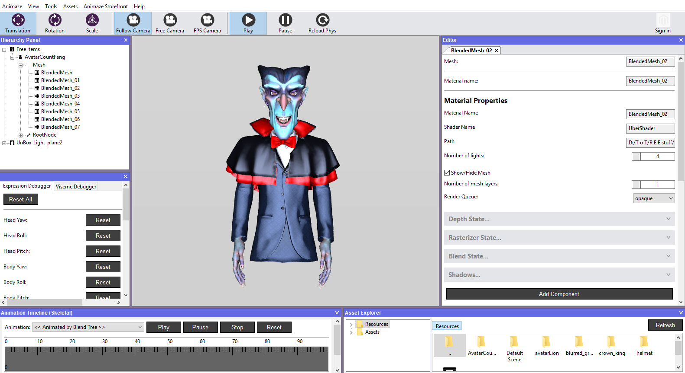
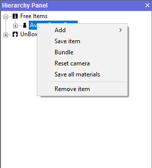

How do I add materials on an imported custom 3D Avatar?
Animaze Editor importer will automatically create a material per mesh. By default, newly created materials feature diffuse, normal map, specular and lighting components (more on Animaze material components in the .avatar technical doc), and the import process tries to properly bind the textures to these components if the texture sources are in the Textures/ folder beside the geometry .fbx file. If the textures aren't binded correctly, the avatar will be rendered with a white shading and you can manually bind the missing textures.
The steps for customizing (binding textures, change component factors, etc.) a mesh material are as follows:
- In the Hierarchy Panel select the mesh to which you want to add texture to

- In the Editor Panel, begin adding the necessary textures by clicking on the square next to the texture name

- This will open the Select Texture box, which retrieves all the textures of your avatar in .ktx format

- You can filter the textures by typing a tag word or the name of the texture
- Continue adding the needed textures and components, change the values where needed/applicable
- Save Material after you finish texturing the mesh

- Continue this process for every mesh of your model until it's complete

- Save your model from the Hierarchy Panel by right-clicking on it and selecting Save Item
